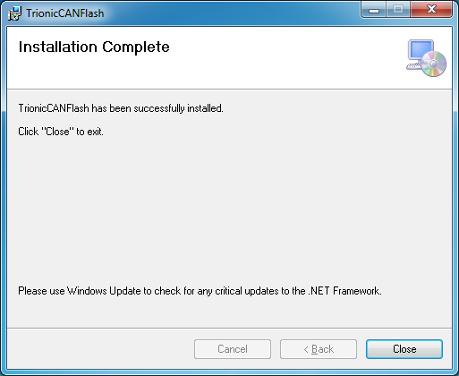

Trionic CAN Flasher
This is a quick guide to help you get started with the Trionic CAN Flasher.
It should run on basically any Windows based computer and has successfully been tested with Windows XP, Windows 7, Windows 8.1 and Windows 10.
The first step is to download the latest version of the Trionic CAN Flasher.
You can do that from the download page.
When downloaded, you should have the TrionicCANFlash.msi and Setup.exe files.
Run the Setup.exe to install Trionic CAN Flasher.
Setup.exe is a bootstrap file that will check for and download required frameworks from Microsoft.
When you have downloaded the Trionic CAN Flasher you install it by double-clicking on the downloaded file.
This will start the installation wizard and it’s recommended to use the default settings. When the installation is complete, you should see the following screen:

The next step is to install the device you use to connect your computer to your car. There are multiple options, but this guide will focus on the ELM327 based alternative.
It’s not the best, but the usually the cheapest. A decent ELM327 device is the ODBLink SX USB.
Please note that the Trionic CAN Flasher does not work with Bluetooth or WiFi devices, but requires a cable connection.
When you have connected the device to your PC’s and drivers has been installed, it’s important to set the latency to 2ms.
Start the windows device manager, find the serial port (e.g. COM7) under Ports.
Right click and select settings. Select tab port settings and click Advanced… button.
Here you find latency. Set it to 2 ms.
Now you can start the Trionic CAN Flasher, it will look something like this:

Next is to select your ECU type, Adapter type, Adapter and COM speed.
In this example we select Trionic 8, ELM327 v1.3 or higher, COM7 and set Com speed to 23040.
If your cable is also connected to your car’s ODB port, you should now have contact.
Put your key in Off position and it is highly recommended to have an external charger connected and that you do not touch anything during this process.
We want to minimize signaling on the bus, which may disturb the process.
Try now by pressing Get ECU Info.
You should now see logs that indicate that the ECU is being read, and when done a new window will pop up with some information about your car and your software.
If all this went well, it’s time to read the software.
The process is:
- Have your key in On position.
- Initiate action (Read ECU / Write ECU).
- When you see message Starting bootloader then you turn key to Off position.
When you have clicked Read ECU, select a filename and watch the log window.
This should take around 10 minutes and the result is that you have downloaded you software.
Next is to take it to T8Suite, do your changes and write it back to the car.
Which is done by clicking Flash ECU. A flash takes around 15 minutes.
If something goes wrong during flashing, don’t panic.
Just try to Recover ECU and re-install your original software.
You might have to shut down and disconnect everything, but it is not likely anything is broken.
Only that you do not have any software in your ECU.